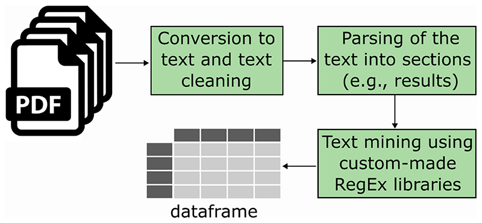
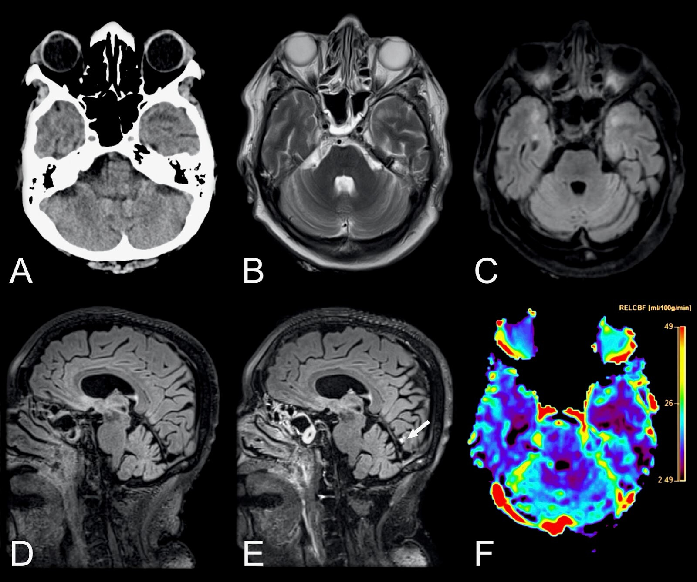
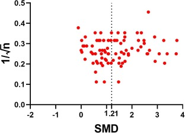
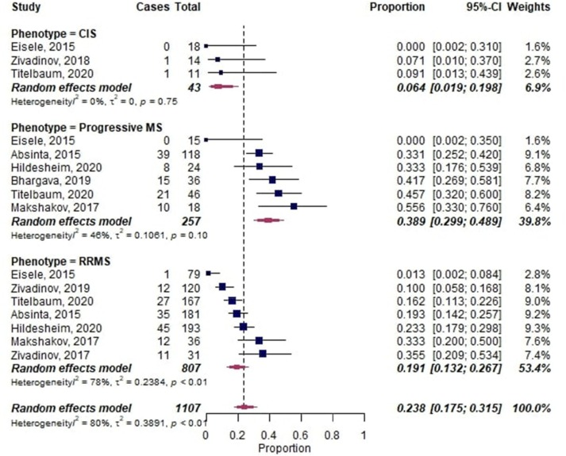
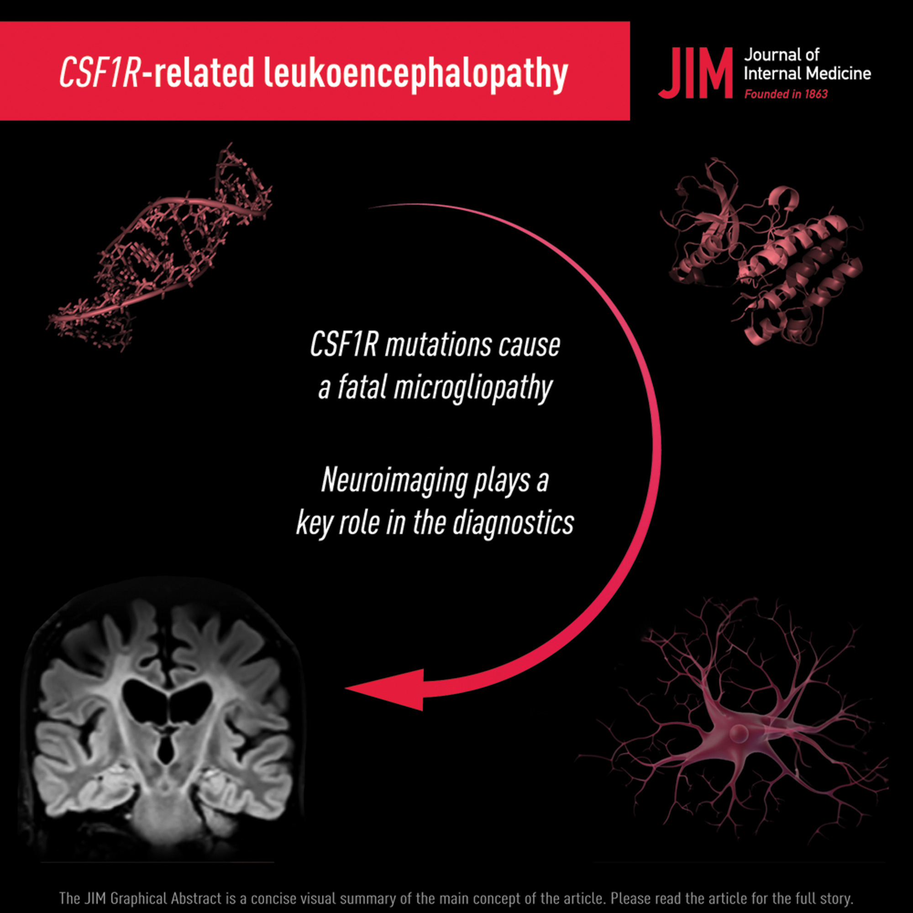
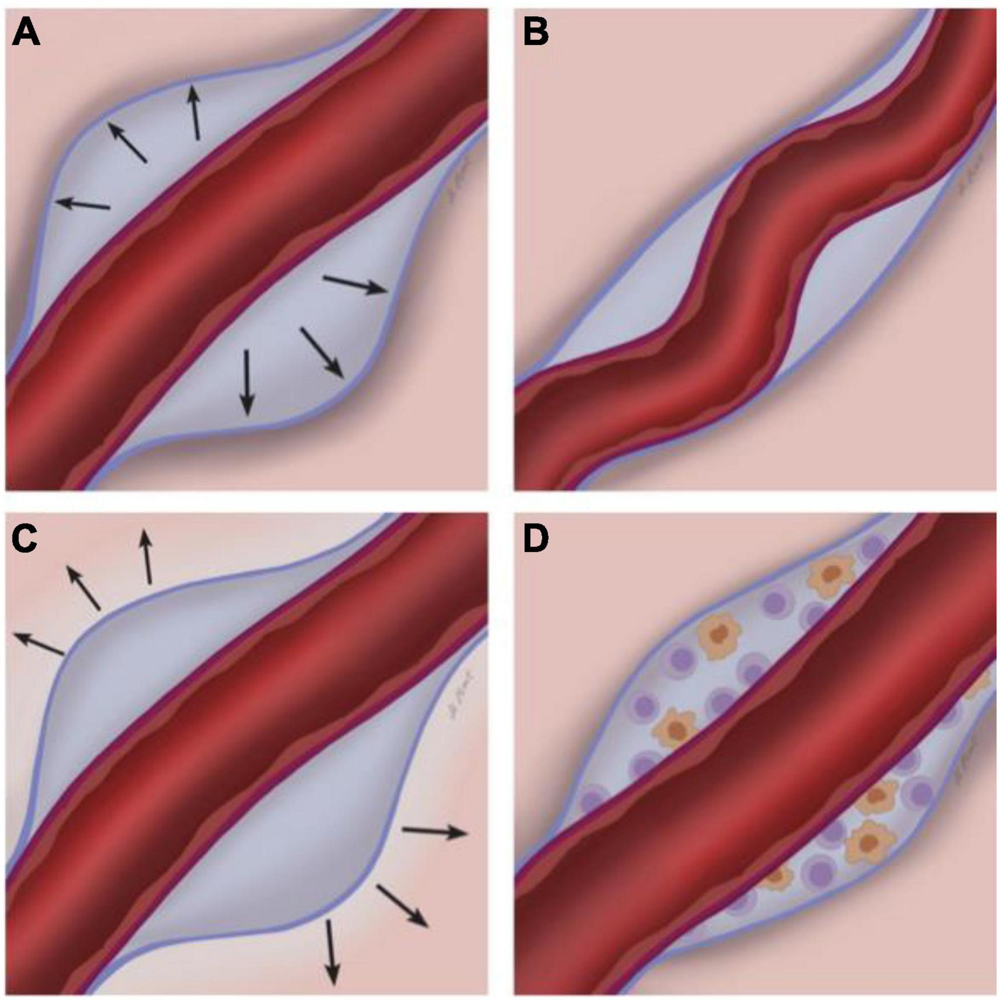
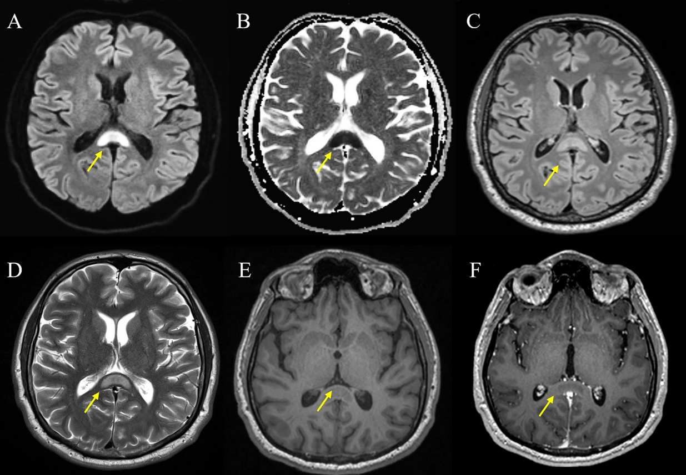

Evidence Synthesis
The rapid expansion of scientific literature challenges our ability to make informed decisions in both clinical and research settings. Our laboratory aims to champion evidence-based research in neuroscience. We focus on conducting systematic reviews and meta-analyses of critical topics in clinical and animal studies, to streamline decision-making processes.
Related Publications









